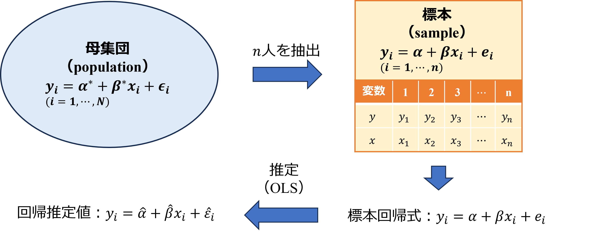
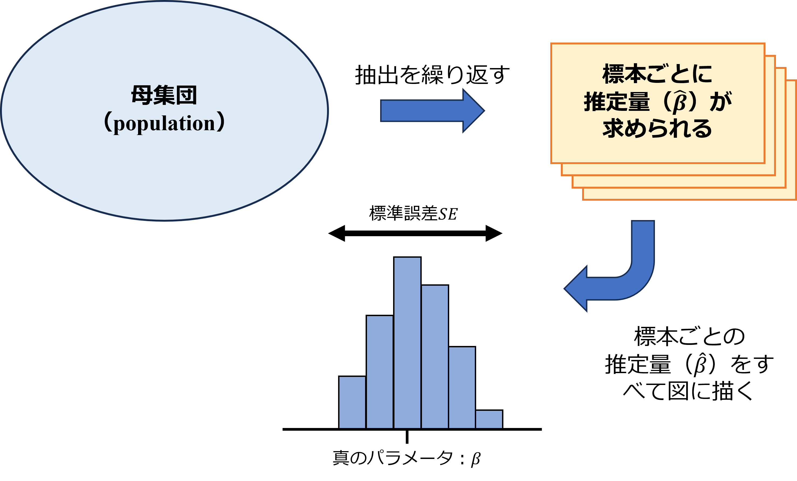
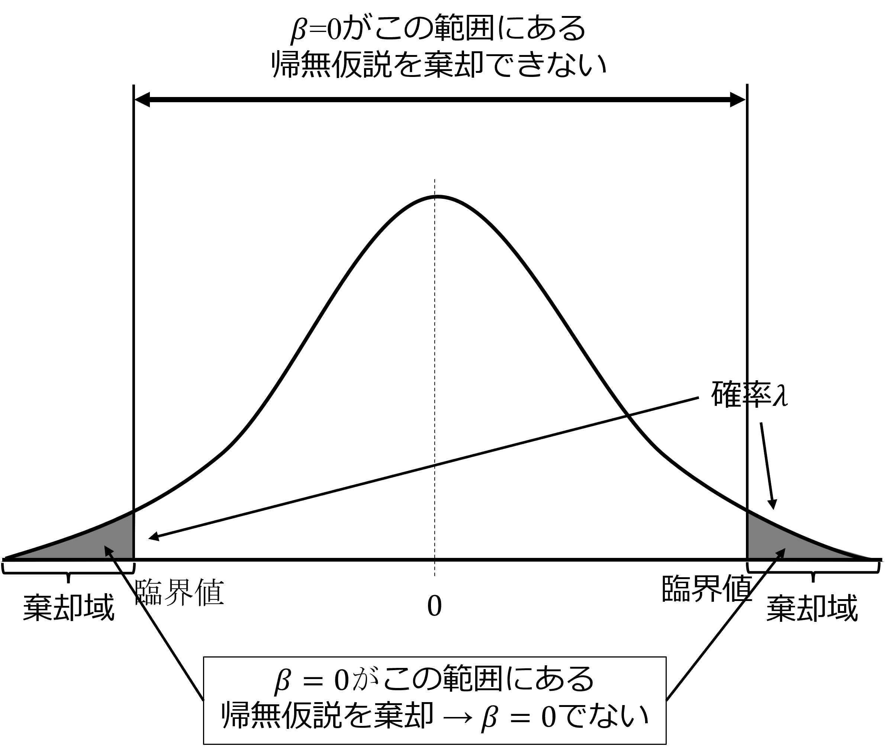
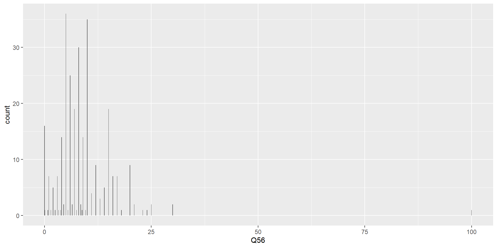
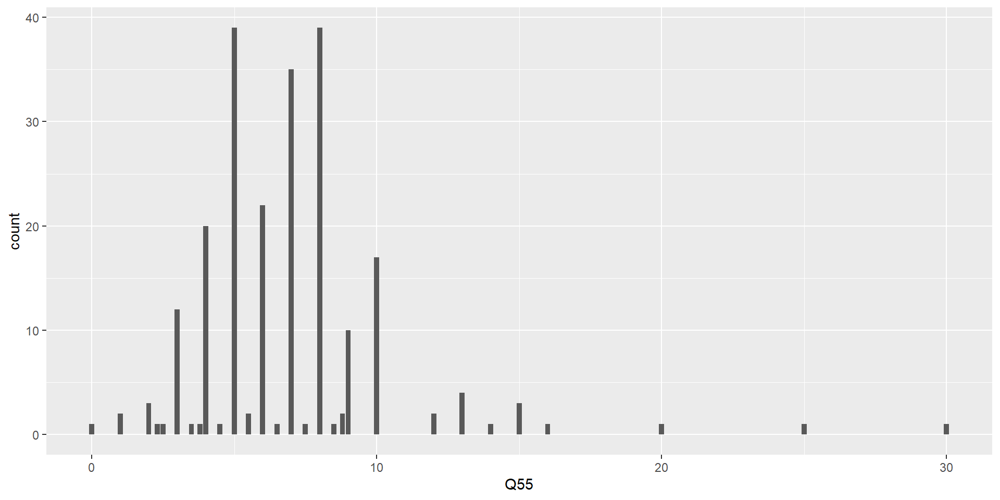
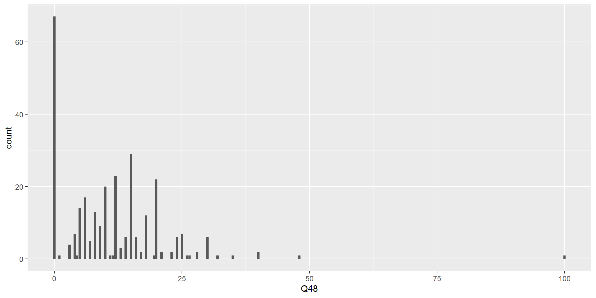
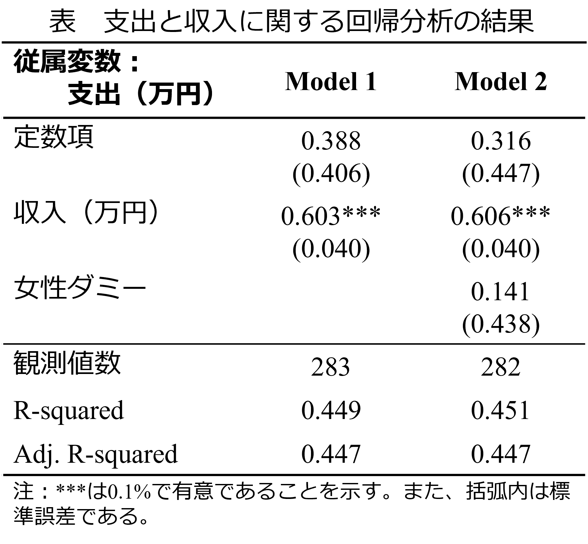

第8回 回帰分析での推定と検定
2026年度 経済データ分析演習B2
2026-11-28
はじめに
出席登録は13:00から14:30まででに登録してください
出席番号
オンデマンド講義のため、出席なし
- Google Classroomへの登録：https://classroom.google.com/c/NzkxMjEzNjY4MzEz?cjc=gsrnanuj
クラスコード
j4osjaqj
今回の目標
- 回帰分析とはなにか理解する
- 回帰分析での推定値の意味を理解できる
- 回帰分析の結果を解釈できるようになる
回帰分析とは何か？
母集団回帰式と標本回帰式
母集団回帰式(population regression)
母集団で想定される回帰式
\(y_i = \alpha^{\ast} + \beta^{\ast}x_i + \epsilon_i ~ (i = 1, \cdots, N)\)
- \(\alpha^{\ast}, \beta^{\ast}\)は母集団回帰式における（未知の）真のパラメータ
- \(\beta^{\ast}\)は、被説明変数\(y_i\)を説明変数\(x_i\)で説明するパラメータ（傾き）
- \(\epsilon_i\)は、\(x_i\)以外で\(y_i\)を説明する変数をすべて含む誤差項(error term)
標本回帰式(sample regression)
標本を用いて求められた回帰式
\(y_i = \alpha + \beta x_i + e_i ~ (i = 1, \cdots, n)\)
- 母集団から抽出した標本を用いて母集団回帰式を置き換えた回帰式
- 最小二乗法（OLS）を用いて誤差の二乗和を最小にする\(\alpha, \beta\)を推定する
- \(e_i\)は標本回帰式における残差(residuals)を意味する（\(e_i = y_i - \hat{y}_i\)）
推定(estimation)
推定(estimation)（前回の復習）
母集団を特徴づける未知のパラメータ（母数、parameter）を標本から推測すること
- 推定量：推定に用いるためにデータから計算される統計量
- 推定値：推定量に標本を代入して得られる値
- 簡単に言うと、
- 母集団に（未知の）真のパラメータが存在していると仮定する
- 母集団から抽出した標本を用いて計算することで、母集団の（未知の）真のパラメータを推測しようとすることを推定と呼ぶ

回帰分析の推定
回帰分析(regression analysis)
母集団で想定される回帰式を特徴づける未知のパラメータを標本を用いて求められた回帰式から推測すること
母集団回帰式：\(y_i = \alpha^{\ast} + \beta{\ast} x_i + \varepsilon_i ~ (i = 1, \cdots , N)\)
標本回帰式：\(y_i = \alpha + \beta x_i +e_i ~ (i = 1, \cdots, n)\)
- 最小二乗法(ordinary least squares method)：回帰式を推定する一つの推定方法
- 最小二乗推定量(ordinary least squares estimator)：標本を用いて推定された回帰式の推定量\(\hat{\alpha}, \hat{\beta}\)

推定した結果は正しい？（前回の復習）
- では、標本統計量を母集団の真のパラメータに近づけるにはどのようには？

回帰係数の標本分布の性質
標本サイズが十分に大きい場合には、次の関係が成立する
パラメータ
推定された標本回帰係数の期待値（平均）は、母集団の真のパラメータに等しくなる
\(E[\hat{\alpha}] = \alpha^{\ast}, ~ E[\hat{\beta}] = \beta^{\ast}\)
標準誤差（standard error, se)
\(SE_\hat{\alpha} = s_e \sqrt{\frac{1}{n} + \frac{\bar{x}^2}{\Sigma_{i=1}^n (x_i - \bar{x})^2}}, ~ SE_{\hat{\beta}} = \frac{s_e}{\sqrt{\Sigma_{i=1}^n (x_i - \bar{x})^2}}\)
- 誤差項の分散が共変量に依存しないという均一分散を仮定
標本回帰係数の標本分布は正規分布（normal distribudtion）となる
検定とは何か？
仮説検定（前回の復習）
仮説検定 (hypothesis testing)
母集団に関するある仮説が、推定された値からと統計的に成り立つのか検証
- 帰無仮説(null hypothesis, \(H_0\))：検定したい仮説
- 対立仮説(alternative hypothesis, \(H_1\))：帰無仮説と対立する仮説（主張したい仮説）
仮説検定の論理
対立仮説\(H_1\)の正しさを主張するために、対立仮説とは反対の帰無仮説\(H_0\)の正しさを否定する
- 回帰分析では、それぞれのパラメータについてこの仮説検定を行う
回帰分析における仮説検定
- 回帰分析において、母集団における係数パラメータの値が、
- ある特定の値であるかを両側検定で検証する
帰無仮説\(H_0:\beta = \beta_0\)
対立仮説\(H_1:\beta \neq \beta_0\)
- \(\beta_0\)は分析者が設定する特定の値
\(\beta\)に関する標準化正規分布
- \(\beta\)の値が0となれば、\(y\)と\(x\)の関係を想定した回帰式が成立しないことを意味します
- つまり、推定したパラメータ\(\beta\)が0である確率を求めたいとなります。
- よって、仮説検定では、帰無仮説に\(\beta\)が0、対立仮説に\(\beta\)が0ではないと仮定します
\(H_0:\beta = 0\)
\(H_1:\beta \neq 0\)
主張したい仮説：帰無仮説を棄却したい

有意水準（前回の復習）
有意水準(significant level)
帰無仮説が間違っている（棄却する）と判断できる基準となる確率
- 親科目では、「第1種の過誤を犯す確率」
- 棄却域の面積であり、この部分が発生する確率
有意水準
- 10%(0.1)
- 5%(0.05)
- 1%(0.01)
- つまり、\(H_0:\beta=0\)という帰無仮説を立て、
- 帰無仮説が棄却された場合、
- 母集団で想定される回帰式のとおり、\(y\)と\(x\)に関係があることを意味する
重回帰分析
重回帰分析：説明変数が2つ以上で被説明変数を説明する回帰式
\(y_i = \alpha + \beta_1 x_{1i} + \beta_2 x_{2i} + \cdots + \beta_k x_{ki} + e_i ~ (i = 1, 2, \cdots, n)\)
偏回帰係数（partial regression coefficient）
重回帰式において、j番目の偏回帰係数\(\beta_j\)は、他の変数を一定とした場合で、\(x_{ji}\)を1単位増やした場合の\(y\)の変化量を示す
- 重回帰式のデータへの当てはまりの指標には、自由度調整済み決定係数を用いる
- 通常の決定係数は、説明変数の数が増えるにつれて1に近づくからである
自由度調整済み決定係数（adjusted coefficient of determination）
\(\bar{R^2} = 1 - \frac{n-1}{n-k} \frac{\Sigma_{i=1}^{n}\hat{u}_i^2}{\Sigma_{i=1}^{n}(y_i-\bar{y})^2}\)
- \(k\)は説明変数の数、\((n-k)\)は自由度
- 仮説検定などは単回帰分析と基本的には同じ
講義課題（回帰分析）
回帰分析(例：支出と収入の関係)
- 2022年学生生活アンケートから、東洋大学の学生の1ヶ月の平均的な支出と平均的な収入の関係を分析
- 回帰式は、
\(y_i = \alpha + \beta x_i + \varepsilon_i\)
- \(y\)は1ヶ月の平均支出（万円）、\(x\)は1ヶ月の平均収入（万円）であり、
- 添え字\(i\)は特定の学生である
- \(\varepsilon\)は誤差項である
\(\beta\)はどんな値をとる？
- 収入が増えれば支出も増える：\(\beta>0\)（つまり正の値をとる）
- 支出が収入を上回ることはない：\(1>\beta>0\)
Rでの回帰分析
- lm関数を使う
- lm(y ~ x, data = data)であり、yには被説明変数の変数名、xには説明変数の変数名を入れる
- data = でデータが格納されているオブジェクト名を入れる
Call:
lm(formula = con_consump ~ con_income, data = df)
Residuals:
Min 1Q Median 3Q Max
-9.0428 -1.8058 -0.2153 1.5779 23.5779
Coefficients:
Estimate Std. Error t value Pr(>|t|)
(Intercept) 0.3877 0.4061 0.955 0.34
con_income 0.6034 0.0398 15.161 <2e-16 ***
---
Signif. codes: 0 '***' 0.001 '**' 0.01 '*' 0.05 '.' 0.1 ' ' 1
Residual standard error: 3.664 on 282 degrees of freedom
(13 observations deleted due to missingness)
Multiple R-squared: 0.4491, Adjusted R-squared: 0.4471
F-statistic: 229.9 on 1 and 282 DF, p-value: < 2.2e-16回帰分析の結果の見方
- 見るべきポイントは、
Coefficients
- (Intercept)：切片（定数項）
- con_income：説明変数
- Estimate：推定量であり、\(\alpha, \beta\)
- Std. Error：標準誤差
- t-value：t値
- Pr(>|t|)：p値
- *：有意水準
- Multiple R-squared：決定係数
- Adjusted R-squared：自由度調整済み決定係数
\[ \begin{array}{rccccc} \hat{y}_i &= &0.388&+&0.603 x_i\\[-3pt] & & (0.406) & & (0.040)^{***} \end{array} \]
有意水準の見方
- 推定結果のスター（* or .）を見ましょう
- スターが**であれば、「有意水準1%で統計的に有意である」ということになり、
- \(\beta\)が0であるという帰無仮説を有意水準1%という厳しい条件で棄却することを意味する
- つまり、スターがあれば、あるいはスターの数が多いほど、
- \(\beta\)が0ではない、つまり、\(x\)が\(y\)に影響を与えていることを意味します
例：支出と収入の関係
「収入は正で有意水準0.1%で統計的に有意であり、収入が1万円増加すると、支出が約6,034円増加することがわかる」
Rでの回帰分析（確認）
- この分析で使用している支出、所得変数は加工後
- つまり、外れ値に設定したデータを除いた後のもの
- 原データでの回帰分析の結果は、
Call:
lm(formula = Q62 ~ Q56, data = data)
Residuals:
Min 1Q Median 3Q Max
-94940 -24139 -12988 14316 274316
Coefficients:
Estimate Std. Error t value Pr(>|t|)
(Intercept) 17988.1 3471.5 5.182 4.08e-07 ***
Q56 769.6 297.4 2.588 0.0101 *
---
Signif. codes: 0 '***' 0.001 '**' 0.01 '*' 0.05 '.' 0.1 ' ' 1
Residual standard error: 39000 on 295 degrees of freedom
(1 observation deleted due to missingness)
Multiple R-squared: 0.0222, Adjusted R-squared: 0.01889
F-statistic: 6.699 on 1 and 295 DF, p-value: 0.01013- 単位が円と万円で違うが、推定結果自体も大きく変わる
- 我々は母集団の真のパラメータを推定することを目的としている
- 恣意的に「外れ値」を設定することは、推定結果を操作することになるので要注意
外れ値の確認(1)
基本
- データの群から明らかに飛び出ているデータ（数個）
- そのデータ（数個）により全体の平均値が明らかに変わってしまうようなデータ
所得の原データ

アルバイト所得の原データ

- 所得データでは100万円だけ突出しているが、アルバイト所得データではそのようなデータを確認できない
外れ値の確認(2)
例）アルバイト時間（時間/週）
- 1週間の総時間は\(24\times 7 = 168\)なので、168時間以下である必要
- 100時間を7日で割ると14.3、48時間では6.9となる
- 学生でない場合はどちらも可能性はあるが、母集団を（第2部、大学院生も含め）学生とする場合、7日で14時間以上は考えにくい
- 一方、48時間は週休二日制であっても10時間以下となり、大学院生などでは大いに可能性がある

重回帰分析
重回帰分析 (multiple regression analysis)
被説明変数\(y\)に対して、2つ以上の説明変数\(x\)を用いて回帰する
- 単回帰分析は説明変数1つなので、それ以外のyへの影響をすべて無視している
- この場合、\(x\)にかかる推定量\(\beta\)に偏り(bias)が生じる
- そこで、説明変数を二つ以上の重回帰式をたてる
\[ \begin{equation} y_i = \alpha + \beta_1 x_{1i} + \beta_2 x_{2i} + \cdots + \beta_k x_{ki} + u_i \end{equation} \]
- この重回帰式では、説明変数が\(k\)個ある
- それぞれの推定量は、他の変数を一定したうえで、\(y\)への\(x_j\)の影響を意味する
Rでの重回帰分析
- 重回帰分析でもlm関数を使う
- lm(y ~ x_1 + x_2, data = data)であり、“+”を用いて複数の説明変数をつなぐ
Call:
lm(formula = con_consump ~ con_income + dum_female, data = df)
Residuals:
Min 1Q Median 3Q Max
-9.1449 -1.7381 -0.3008 1.5157 23.6288
Coefficients:
Estimate Std. Error t value Pr(>|t|)
(Intercept) 0.31608 0.44738 0.707 0.480
con_income 0.60551 0.04006 15.115 <2e-16 ***
dum_female 0.14061 0.43845 0.321 0.749
---
Signif. codes: 0 '***' 0.001 '**' 0.01 '*' 0.05 '.' 0.1 ' ' 1
Residual standard error: 3.672 on 280 degrees of freedom
(14 observations deleted due to missingness)
Multiple R-squared: 0.4505, Adjusted R-squared: 0.4466
F-statistic: 114.8 on 2 and 280 DF, p-value: < 2.2e-16推定結果のまとめ方

- Wordの表機能、あるいはExcelで推定結果をまとめて整理する
講義課題
講義課題（１）：回帰分析をしてください
- 中間レポート用に選択した被説明変数とメインとなる一つの説明変数を用いてlm関数を使って単回帰分析をしてください
- もう一つ説明変数を加えた重回帰分析をしてください
- 説明変数を3つ以上選択している方は、一つ一つ加えていってください
講義課題（２）：回帰分析の結果をWordにまとめてください
- 必要な項目は、第8回講義資料の19 or 26頁を参考にしてください
- ここからわかることをWordにまとめてください
- 余裕があれば原データの結果から、外れ値に設定した値の影響を考えてください